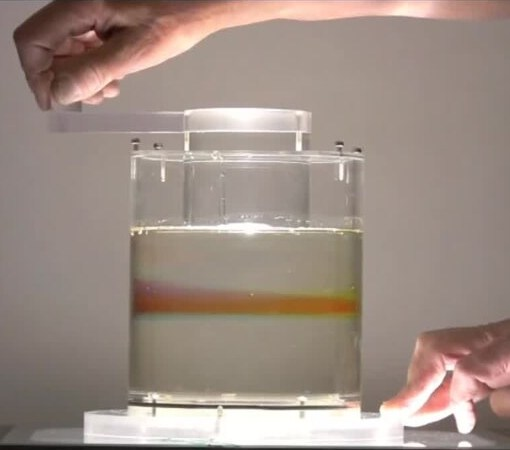

Un fluido entre cilindros que giran y los rollos que aparecen
Llená el espacio entre dos vasos, uno dentro del otro, con agua, y hacé girar el de adentro. Mientras gira despacio, el agua da vueltas ordenadamente. Pero si lo hacés girar más rápido, el agua se organiza sola en una pila de anillos, como rosquillas apiladas, que giran alternando el sentido. Son los rollos de Taylor, y el sistema, el flujo de Taylor-Couette, es uno de los laboratorios preferidos de la física de fluidos.

David Tong, de la Universidad de Cambridge, resuelve el caso más simple: dos cilindros concéntricos e infinitos, que giran cada uno a su velocidad angular [1]. Por la simetría, el fluido gira alrededor del eje, y la condición de no deslizamiento en las dos paredes fija cómo cambia su velocidad angular con el radio [1]:
El primer término es una rotación uniforme; el segundo, un vórtice libre [1]. Tong señala que al flujo circular de Couette también se lo llama de Taylor-Couette porque Taylor descubrió ciertas inestabilidades en él [1]. Es la versión circular del flujo de Couette entre placas.
Según la revisión de Siegfried Grossmann, Detlef Lohse y Chao Sun, el comienzo de las inestabilidades cuando aumenta la velocidad del cilindro de adentro se debe a la fuerza centrífuga, y se puede estimar con argumentos de balance de fuerzas, como hizo Taylor en 1923 al generalizar el famoso criterio de estabilidad de Lord Rayleigh, de 1917 [2]. La idea es que el fluido cerca del cilindro de adentro gira más rápido y tiende a ser lanzado hacia afuera; si nada lo frena lo suficiente, el fluido se reorganiza en rollos que llevan fluido hacia afuera y lo traen de vuelta (un razonamiento a partir de la explicación centrífuga).
La calesita con gente adentro: imaginá una calesita doble, con una plataforma de adentro que gira rápido y una de afuera que gira despacio, y gente parada entre las dos. La gente de adentro siente que la empujan hacia afuera más que la de afuera. Si el empuje es chico, todos se quedan en su lugar. Si es grande, la gente empieza a intercambiar posiciones de manera ordenada, en filas que salen y vuelven. Los rollos de Taylor hacen eso con el agua.
Grossmann, Lohse y Sun reproducen el diagrama de fases de Andereck, Liu y Swinney, de 1986, que muestra lo rico que es este sistema aun a números de Reynolds de solo 1000 o 2000 [2]. Según las velocidades de los dos cilindros aparecen, además del flujo de Couette simple, rollos de Taylor, rollos ondulados, espirales, espirales que se entrelazan, ondas moduladas y distintas formas de turbulencia [2].
A números de Taylor todavía bajos, hasta alrededor de 106, el espacio entre los cilindros está lleno de estructuras ordenadas, los rollos de Taylor [2]. Alrededor de 3 × 106, esas estructuras se vuelven más chicas que el ancho del espacio, y la turbulencia empieza a desarrollarse en el interior del fluido [2].
Grossmann, Lohse y Sun llaman al flujo de Taylor-Couette, junto con la convección de Rayleigh-Bénard, la «drosófila» de la física de fluidos: el sistema modelo con el que se prueban conceptos nuevos, de las inestabilidades a la formación de patrones y la turbulencia [2]. Su revisión discute además su relevancia para los discos astrofísicos, cuyos flujos giran de manera parecida a la de los planetas alrededor del Sol [2].
Cuando el giro estabiliza: no todas las combinaciones de velocidades son inestables. Grossmann, Lohse y Sun distinguen un régimen «inestable según Rayleigh» de uno «estable según Rayleigh», y este último es justamente el que interesa para los discos astrofísicos [2]. Cómo cae el gas en esos discos se contará en el artículo sobre discos de acreción de esta sección.
Un fluido entre dos cilindros que giran parece un problema sencillo, pero tiene casi todo: una solución exacta de las ecuaciones de Navier-Stokes, una inestabilidad causada por la fuerza centrífuga que Taylor explicó en 1923, rollos ordenados, espirales y, al final, turbulencia. Por eso es, junto con la convección, el sistema modelo favorito de la física de fluidos.
Pregunta para la comunidad: Si en lugar de girar el cilindro de adentro girás solo el de afuera, ¿esperás que aparezcan los rollos de Taylor? Pensalo con la fuerza centrífuga: ¿dónde gira más rápido el fluido en ese caso?